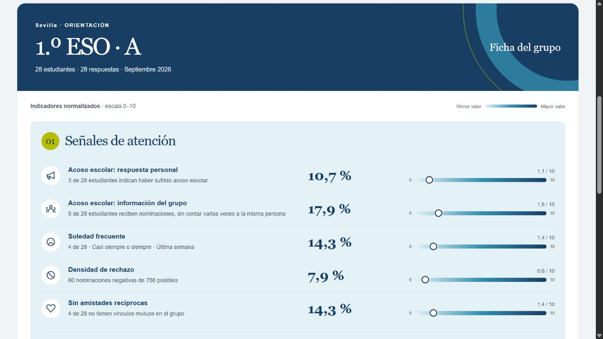

01 / Ficha del grupo
Reconoce los patrones.
Señales de atención, integración y mediación reunidas en una misma lectura. Porcentajes y recuentos junto a su contexto.
Para tutoría y orientaciónOrientación y convivencia escolar
Una visión clara de cada aula y de cada estudiante. Explora las fichas con un ejemplo completo y descubre cómo ayudan a preparar conversaciones mejor informadas.

Una lectura compartida
Empieza por las relaciones del grupo. Después, sitúa cada ficha individual dentro de su contexto.
01 / Ficha del grupo
Señales de atención, integración y mediación reunidas en una misma lectura. Porcentajes y recuentos junto a su contexto.
Para tutoría y orientación02 / Ficha individual
Amistad, rechazo, bienestar y reconocimiento en mediación. Indicadores legibles para preparar una conversación, sin convertirlos en etiquetas.
Una persona dentro de su grupo03 / Edición local
Abre dos archivos separados y únelos durante la sesión. Las fichas funcionan sin servidor de datos. El envío voluntario de opiniones requiere conexión y un receptor activado.
Consulta las fichas sin conexiónLos indicadores abren preguntas. Su interpretación requiere contexto y criterio profesional. PBIS no ofrece diagnósticos ni decisiones automáticas sobre los estudiantes.
Del ejemplo a la conversación
La demostración incluye 54 grupos y 1.512 estudiantes con datos inventados. Puedes explorarla sin preparar archivos.
Leer la guía de usoPulsa Probar en el navegador. No necesitas descargar un ZIP, instalar R ni crear una cuenta.
Elige Probar con orientación o entra con una cuenta de tutoría de evaluación. La sesión se abre sin datos cargados.
Pulsa Cargar ejemplo para ver las fichas de tu perfil. Elige centro, curso y grupo; después, consulta cada ficha individual.
Puedes valorar una ficha y guardar tu opinión en un Excel separado. Cierra la sesión cuando termines.
También disponible sin conexión
Edición local de evaluación 0.9.1. Descárgala para probar la carga de los Excel y consultar las fichas sin conexión.
Abre el archivo HTML con Edge, Chrome o Firefox.
Descargar para Windows ZIP · Visualizador HTML localAbre el archivo HTML con un navegador actualizado.
Descargar para macOS ZIP · Mac Intel y Apple SiliconAbre el archivo HTML con Chrome, Chromium o Firefox.
Descargar para Linux ZIP · Sin instalación de paquetes¿Preparas varios equipos? Usa la edición universal con la misma aplicación e instrucciones comunes.
Descargar ZIP universalMaterial para explorar el producto
Dos centros de enseñanza, nueve cursos y grupos A, B y C. Los datos inventados permiten ensayar el flujo sin cargar información de estudiantes reales. En la demostración, pulsa Cargar ejemplo después de iniciar sesión. Para probar la edición descargable, carga los dos Excel de indicadores y llave; la hoja de perfiles sirve como referencia de acceso.
Antes de empezar
Una puesta en marcha sencilla también necesita límites bien explicados.
Cómo se tratan los archivosPara probar la demostración basta con un navegador actualizado: pulsa Probar en el navegador, después Probar con orientación y, dentro de la sesión, Cargar ejemplo. Si prefieres la edición local, descarga el ZIP, extrae la carpeta completa y abre PBIS.html. Ninguna de las dos opciones necesita R ni Docker.
De 4.º a 6.º de Primaria; de 1.º a 4.º de ESO; y 1.º y 2.º de Bachillerato. Todos tienen grupos A, B y C. La hoja de perfiles indica las cuentas de tutoría y orientación y su alcance.
La demostración incluye un ejemplo inventado y público; no necesitas cargar Excel. Cuando eliges tus propios archivos en el visualizador, su contenido se procesa en el navegador y no se sube al servidor. Al visitar la web sí se descargan sus páginas y recursos, y el alojamiento puede registrar datos técnicos de la conexión.
Sí. Un botón discreto permite votar y comentar. La opinión incluye el rol, un código aleatorio de sesión, el tipo de ficha y las claves del aula y, en la ficha individual, del estudiante. El diálogo muestra las claves antes de enviar. No se añaden nombres ni etiquetas del centro, curso o grupo. Son opiniones seudonimizadas: quien tiene los archivos y la llave puede relacionarlas con la ficha. Evita nombres o detalles personales en el comentario. Puedes guardarla en un Excel separado. Al pulsar Enviar opinión, Formspree recibe y almacena la opinión y gestiona el aviso por correo. El correo contiene la opinión sin Excel adjunto; puedes guardar el Excel aparte.
Opiniones y activación del correoCerrar sesión retira las fichas de la vista. El ejemplo inventado sigue formando parte de la demostración pública. Al entrar de nuevo, pulsa Cargar ejemplo si quieres consultarlo; no se carga automáticamente. Al cerrar la pestaña termina su ejecución. Si has elegido Excel propios, los originales siguen donde los guardaste. Las opiniones que solo estaban en la sesión se descartan; las exportadas o enviadas permanecen en sus destinos. Esto no garantiza la eliminación forense de rastros del sistema, copias o capturas.
La demostración pública está pensada para evaluar el producto con datos inventados. No incorpores datos reales al contenido publicado. Antes de un uso real deben resolverse los controles de acceso, la custodia de archivos y las validaciones técnicas y profesionales necesarias. Las contraseñas compartidas de evaluación no sirven como autorización segura.
La ficha conserva recuentos, denominadores y puntuaciones. Consulta la metodología para distinguir proporciones, medidas de red y escalas. Una puntuación 0–10 no equivale por sí misma a un percentil ni a un diagnóstico.
Consultar metodologíaPBIS · Demostración con datos inventados